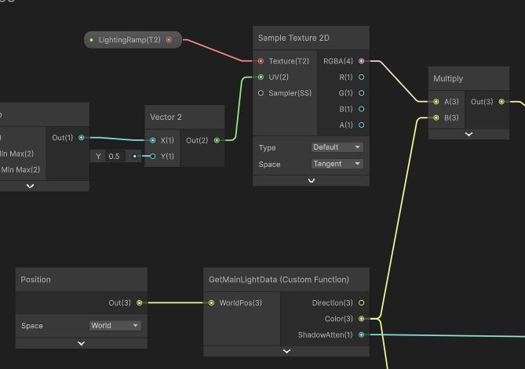

When I was working on World Cricket Championship 3, we had a problem.
The game looked great on a mid-range test device. Then we ran it on a low-end Snapdragon, and the frame time for a single material nearly doubled. Same shader. Same scene. Completely different GPU.
That was the moment I stopped thinking about shaders as visual tools and started thinking about them as performance contracts.
This post is about what I learned from profiling shaders across 50+ devices—the failures, the fixes, and the principles I now apply before writing a single node in Shader Graph.
The Problem With Mobile GPU Variance
Mobile is not a platform. It is a spectrum.
You are shipping to Adreno 505s and Adreno 750s in the same build. Mali G52s and G715s. Apple A14s and A17s. Each of these GPUs has a different shader compiler, different precision handling, different memory bandwidth, and a different ALU-to-bandwidth ratio.

A shader that runs at 0.4ms on a flagship will run at 2.1ms on a low-end device—and that low-end device is often where most of your players are.
This is the core challenge. You cannot design shaders for your test device. You have to design them for the worst device your game will realistically run on.
ALU Cost Is Not What You Think It Is
Most developers understand that complex math is expensive. What is less obvious is how non-linearly that cost scales across different GPUs.
On desktop, a few extra instructions in a fragment shader is usually noise. On a mobile GPU with limited execution units and tight thermal constraints, those same instructions can stall the pipeline.
The specific operations that hurt most on mobile:
pow()— expensive on almost every mobile GPU, avoid it in fragment shaderssin()andcos()in tight loops — use lookup textures instead- Long chains of
smoothstep()— each one is more ALU than it looks - Dynamic branching — GPUs hate divergent execution paths, even simple ones
- Dependent texture reads — sampling a texture based on a value computed from another texture

During WCC3 profiling, I found that replacing a single pow()-based
specular calculation with a ramp texture lookup cut fragment shader time by roughly
30% on low-end Adreno hardware. The visual difference was nearly imperceptible
at mobile resolution.
Use Textures as Lookup Tables
This is one of the oldest tricks in mobile graphics—and still one of the most effective.
If you are computing something complex in a shader—a specular response, a gradient, a falloff curve—ask yourself: can this be baked into a texture?
Texture samples on mobile are cheap relative to ALU. A 256×1 gradient texture
sampled with a single UV can replace a pow(), a smoothstep(),
and a multiply chain. It is also easier for artists to iterate on—they edit a texture,
not a shader.

I used this heavily for the toon shading system at Highstreet. The lighting ramp, the rim falloff, and the specular response were all driven by artist-authored textures rather than shader math. It made the visual language flexible, performant, and something the art team could actually control.
Precision Matters More Than You Think
On desktop, float is everywhere. On mobile, the distinction between
float, half, and fixed is a real performance lever.
Most mobile GPUs have native half precision support, and using it where
appropriate can cut register pressure significantly. The rule I follow:
- World-space positions and transforms —
float - UVs, colours, most per-pixel calculations —
half - Simple 0–1 values like opacity —
fixedwhere supported
The catch: Unity's Shader Graph handles this automatically to a degree, but if you are writing hand-coded HLSL, being explicit about precision pays off on older Adreno and Mali hardware.
Shader Variants Are a Hidden Cost
Every keyword you add to a shader doubles (at minimum) the number of compiled variants. On mobile, this matters in two ways: build size and runtime memory.

On WCC3, the character shader had grown organically over time. By the point we profiled it seriously, it had accumulated enough keywords to produce hundreds of variants—most of which were never actually used in a live build.
The fix was a shader variant collection pass: stripping unused variants at build time and consolidating features that were always used together into a single path. Build size dropped, and cold-start shader compilation stalls on low-end devices became noticeably shorter.
The lesson: treat your shader keyword list like an API. Every keyword you add has a cost. Add them deliberately.
Write for the Worst Device, Not the Best One
This sounds obvious. It is not how most shader development actually happens.
The development machine is always fast. The test device on the desk is usually mid-range. By the time a shader reaches a low-end device, it has often been reviewed, approved, and shipped.
The process I settled on after enough painful profiling sessions:
- Define a frame budget before writing a shader — not after
- Profile on the lowest-spec target device before review, not before launch
- Use Unity's GPU profiler and platform-specific tools (Snapdragon Profiler, Mali Graphics Debugger) — not just the Unity Profiler
- Set a per-material fragment time ceiling and treat exceeding it as a bug
That last one changed how conversations happened with the art team. When there is a defined budget, performance becomes a design constraint—not a last-minute negotiation.
The Material Pipeline Is Part of the Shader
A well-written shader can still perform badly if the material pipeline around it is messy.
On WCC3, one of the bigger wins came from consolidating character materials. We went from 72 materials across a character to 4—achieved through texture atlasing, a carefully structured shader that handled multiple surface zones, and a material instancing approach that kept draw calls low even with 15 characters on screen simultaneously.
The shader itself was not dramatically simpler. But by reducing unique material count, we eliminated a huge amount of state switching on the GPU—which on mobile is often more expensive than the shader math itself.
Closing Thoughts
Shaders feel like a creative tool. On mobile, they are also an engineering constraint.
The GPU variance across Android hardware alone means that what works on your test device is not a guarantee of anything. The only way to know is to measure— early, often, and on real hardware.
The developers I have seen get this right are the ones who treat shader performance the same way they treat code performance: as something you design for, not something you fix later.